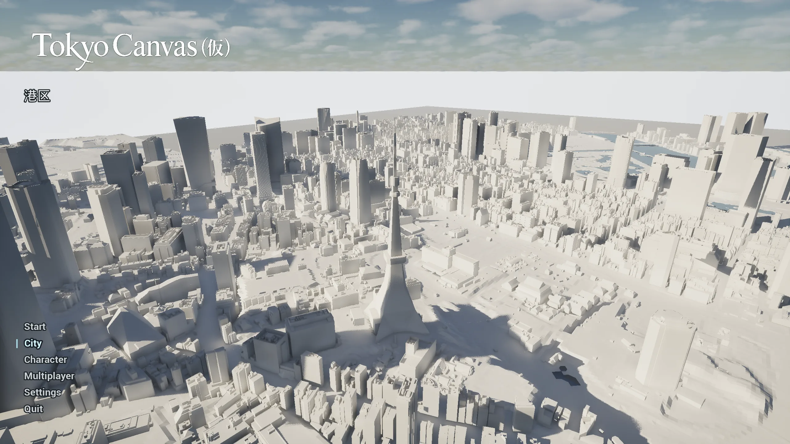
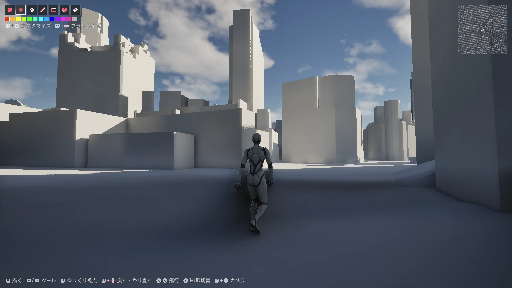
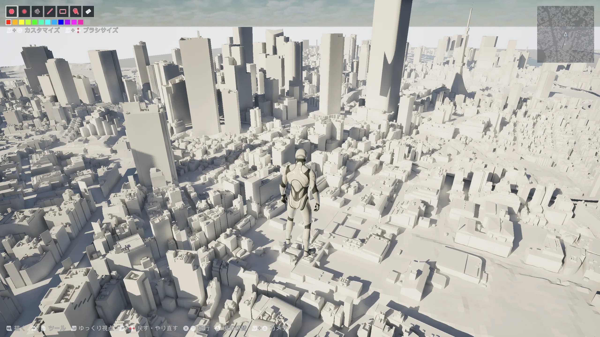
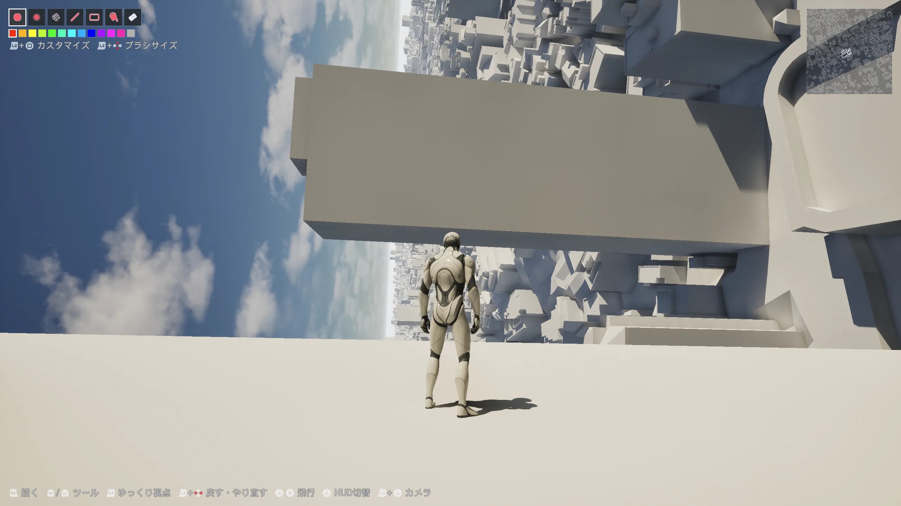
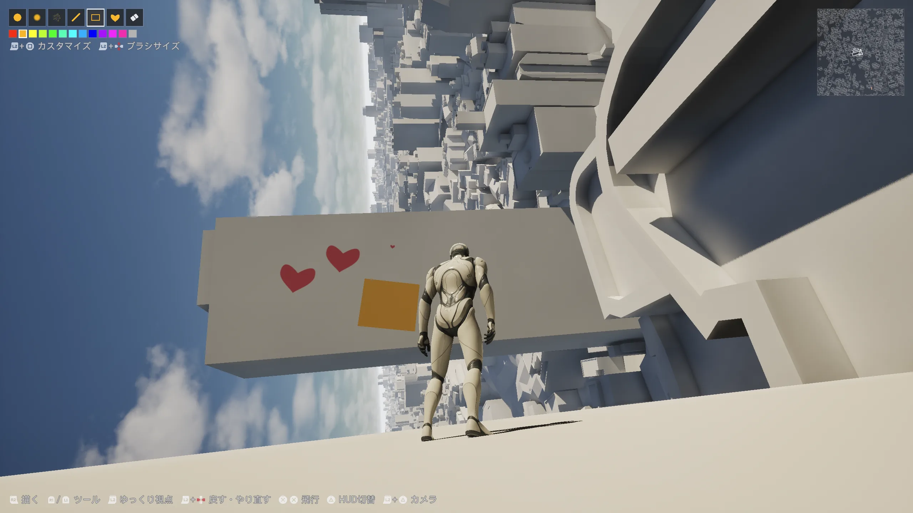
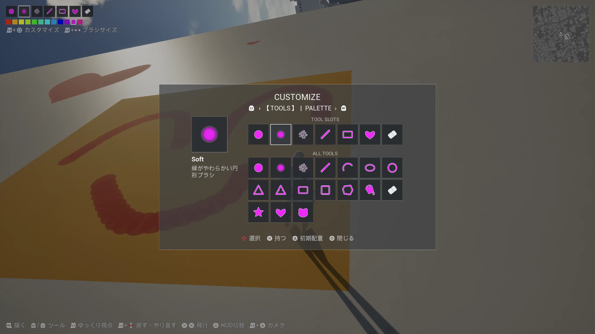
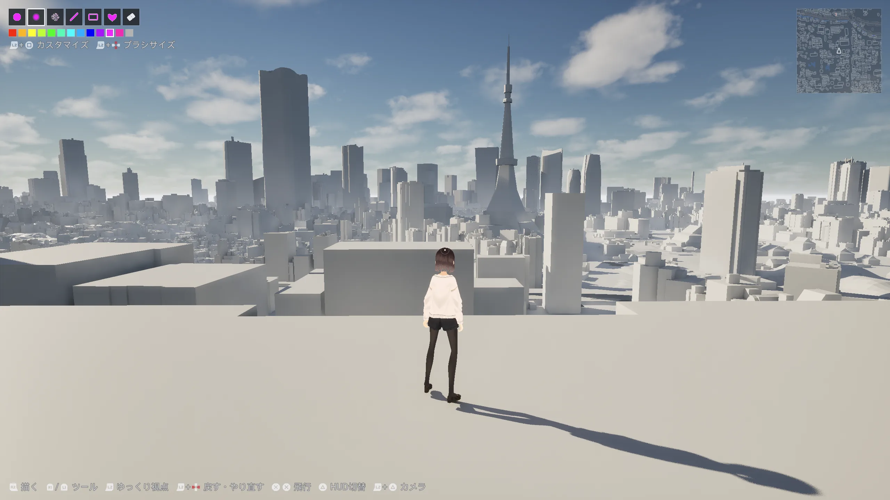
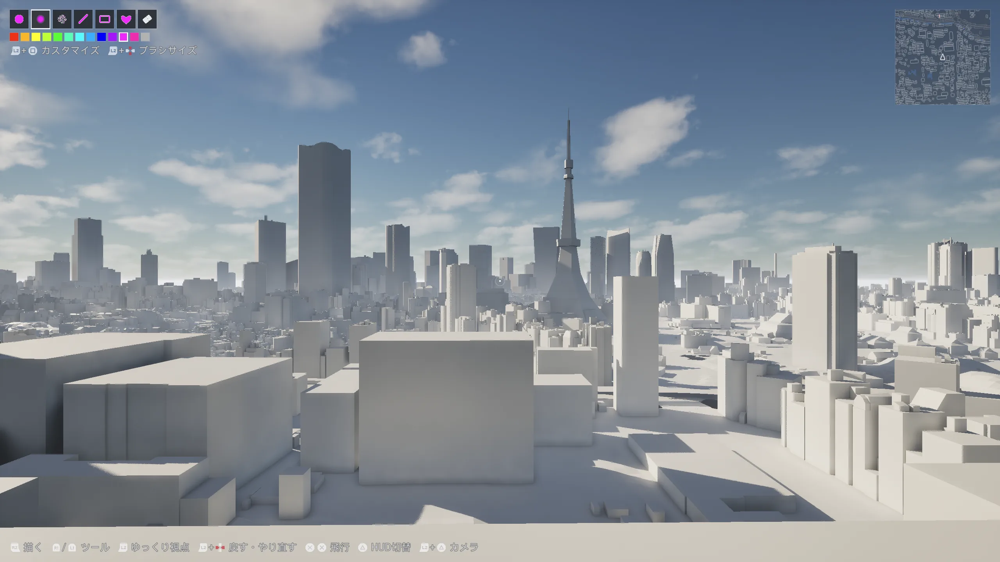
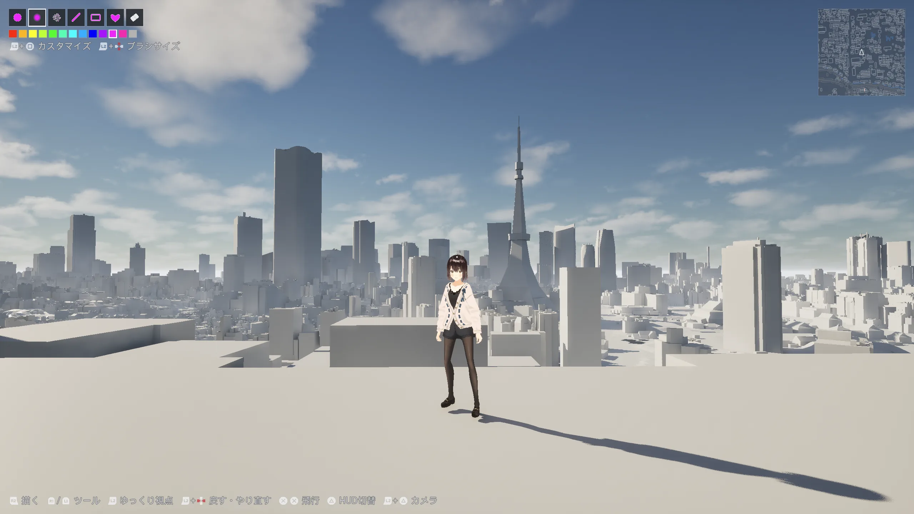
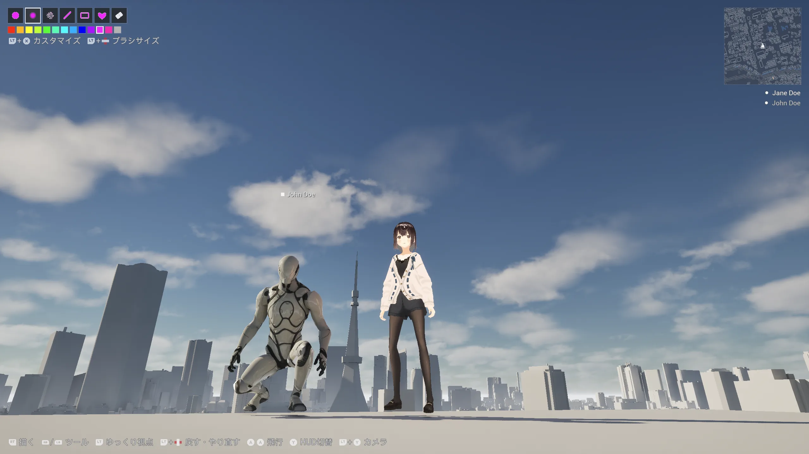

Fly through Tokyo
PLATEAUの3D都市モデルで再現した東京23区を、区ごとに読み込み、空中を自由に探索します。
A QUIET 3D MAP PAINTING GAME
東京の街を、巨大なキャンバスに。空を自由に移動しながら、建物、道路、屋根、地面へ静かに色を重ねていく。
01 / CONCEPT
Tokyo Canvasは、東京23区の3D都市モデルを舞台にした探索とペイントのゲームです。地面から壁、屋根、空へと重力の向きを変え、好きな場所を見つけて描く。ひとりでも、友達と同じ街を共有しても遊べます。
02 / PLAY
PLATEAUの3D都市モデルで再現した東京23区を、区ごとに読み込み、空中を自由に探索します。
ソリッド、ソフト、スプレー、ライン、円弧、図形、ポリゴン、塗りつぶし、スタンプなど17種類から、7つのツールスロットを自由に編集して描けます。
2〜4人のオンラインマルチプレイでは、同じ区とキャンバスを共有して一緒に描けます。
03 / SCREENSHOTS
実在する東京の輪郭の中へ降り、歩き、飛び、世界を傾けて色を残す。ひとりでも、同じ街に集まっても。

01 / TOKYO
PLATEAUの3D都市モデルを使った東京23区から、1区を選んでその街へ入る。

02 / WALK
高層ビルの谷間も、屋上も、自分の足で歩き回れる。

03 / FLY
飛行モードへ切り替え、密集する東京を上から自由に探索する。

04 / GRAVITY
視線の先へ重力を向け直し、壁も天井も新しい足場にする。

05 / PAINT
地面、道路、屋根、建物の壁に、ブラシや図形、スタンプで色を残す。

06 / TOOLS
17種類のツールから、すぐに使いたい7つをスロットへ自由にセットできる。
07–09 / CAMERA
1人称、3人称、そしてアバターと風景を楽しむシアターモード。VRoid Hubのモデルも自分の姿として選べる。




10 / MULTIPLAYER
2〜4人で同じ区に入り、それぞれの色と描画をリアルタイムで共有する。
04 / AVATAR
SINGLE-PLAYER INTEGRATION IN TESTINGVRoid Hubに登録した自分のモデルを選び、シングルプレイのアバターとして使う機能をMacとWindowsで開発・検証中です。参加者それぞれのモデルを表示するマルチプレイ連携は、VRoid HubのMultiplay承認後に対応予定です。
05 / STATUS
Tokyo Canvasは開発中です。リリース時期、価格、配布ストアは未定です。